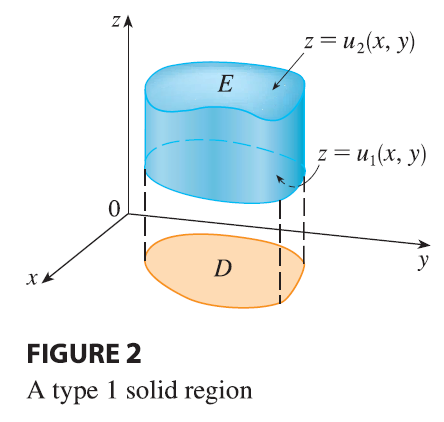
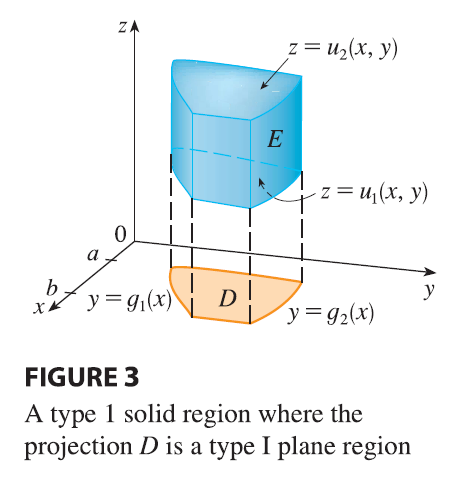
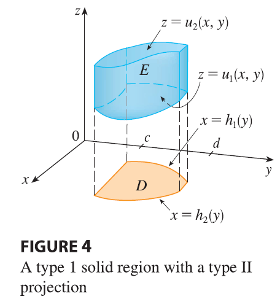

We define the triple integral over a general bounded region \(E\) in three-dimensional space (a solid) by much the same procedure that we used for double integrals (15.2.2). We enclose \(E\) in a box \(B\) of the type given by Equation 1. Then we define \(F\) so that it agrees with \(f\) on \(E\) but is 0 for points in \(B\) that are outside \(E\). By definition, \[ \iiint_E f(x, y, z) dV = \iiint_B F(x, y, z) dV \] This integral exists if \(f\) is continuous and the boundary of \(E\) is “reasonably smooth.” The triple integral has essentially the same properties as the double integral (Properties 6–9 in Section 15.2).
We restrict our attention to continuous functions \(f\) and to certain simple types of regions. A solid region \(E\) is said to be of type 1 if it lies between the graphs of two continuous functions of \(x\) and \(y\), that is, \[ E = \{(x, y, z) | (x, y) \in D, u_1(x, y) \le z \le u_2(x, y)\} \tag{5} \]

where \(D\) is the projection of \(E\) onto the \(xy\)-plane as shown in Figure 2. Notice that the upper boundary of the solid \(E\) is the surface with equation \(z = u_2(x, y)\), while the lower boundary is the surface \(z = u_1(x, y)\).
By the same sort of argument that led to (15.2.3), it can be shown that if \(E\) is a type 1 region given by Equation 5, then \[ \iiint_E f(x, y, z) dV = \iint_D \left[ \int_{u_1(x,y)}^{u_2(x,y)} f(x, y, z) dz \right] dA \tag{6} \] The meaning of the inner integral on the right side of Equation 6 is that \(x\) and \(y\) are held fixed, and therefore \(u_1(x, y)\) and \(u_2(x, y)\) are regarded as constants, while \(f(x, y, z)\) is integrated with respect to \(z\).
In particular, if the projection \(D\) of \(E\) onto the \(xy\)-plane is a type I plane region (as in Figure 3), then

\[ E = \{(x, y, z) | a \le x \le b, g_1(x) \le y \le g_2(x), u_1(x, y) \le z \le u_2(x, y)\} \] and Equation 6 becomes \[ \iiint_E f(x, y, z) dV = \int_a^b \int_{g_1(x)}^{g_2(x)} \int_{u_1(x,y)}^{u_2(x,y)} f(x, y, z) dz dy dx \tag{7} \] If, on the other hand, \(D\) is a type II plane region (as in Figure 4), then

\[ E = \{(x, y, z) | c \le y \le d, h_1(y) \le x \le h_2(y), u_1(x, y) \le z \le u_2(x, y)\} \] and Equation 6 becomes \[ \iiint_E f(x, y, z) dV = \int_c^d \int_{h_1(y)}^{h_2(y)} \int_{u_1(x,y)}^{u_2(x,y)} f(x, y, z) dz dx dy \tag{8} \]